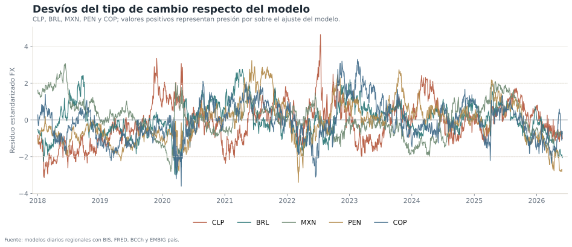
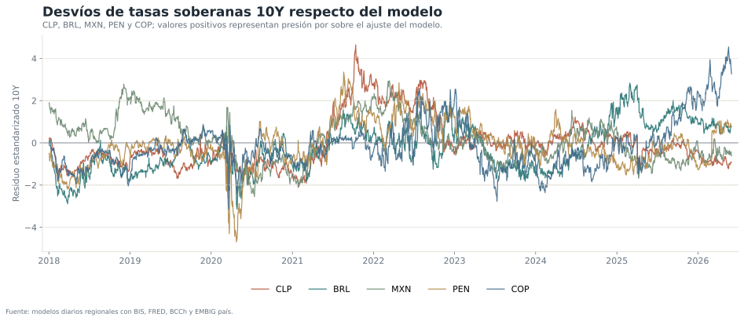
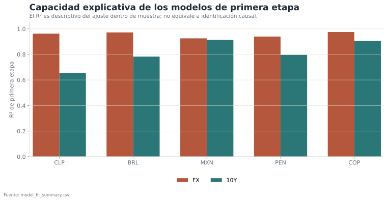
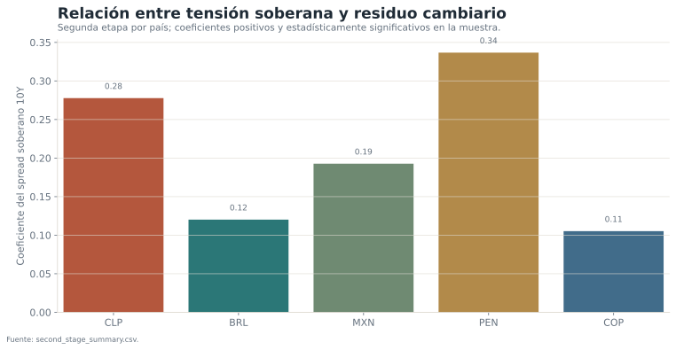

Estructura del modelo
La primera etapa se estima por país y mercado. Para el tipo de cambio se combinan inflación relativa, materias primas, volatilidad global, dólar amplio, CNY y mercados accionarios. Para tasas 10Y se incorporan Treasury, VIX, dólar global, factores regionales y riesgo soberano EMBIG.
La normalización permite comparar mercados expresados en unidades distintas. Un z-score positivo indica una presión por sobre la referencia del modelo; no equivale automáticamente a desalineamiento estructural.
Resultados regionales


Selector por país
Tasas observadas
Desvío cambiario del modelo
Ajuste de primera etapa

| País/moneda | FX · R² | FX · RMSE | 10Y · R² | 10Y · RMSE |
|---|---|---|---|---|
| BRL | 0,972 | 0,054 | 0,783 | 0,980 |
| CLP | 0,963 | 0,038 | 0,656 | 0,614 |
| COP | 0,975 | 0,043 | 0,906 | 0,677 |
| MXN | 0,925 | 0,044 | 0,913 | 0,426 |
| PEN | 0,940 | 0,028 | 0,796 | 0,478 |
Riesgo soberano y presión cambiaria

La segunda etapa documenta una asociación entre mayor tensión soberana y una depreciación superior a la explicada por factores globales. No debe interpretarse como causalidad unidireccional: ambos mercados pueden responder a noticias locales comunes.
Límites de interpretación
- La especificación diaria privilegia seguimiento y comparabilidad, no identificación estructural completa.
- Los resultados dependen de las fuentes y de la disponibilidad simultánea de series.
- El residuo mezcla riesgo local, liquidez, noticias y cualquier factor omitido.
- Comparar z-scores ayuda a leer intensidad relativa, pero no convierte todos los mercados en equivalentes.
- El último snapshot puede no incluir todos los países el mismo día si una fuente presenta rezago.